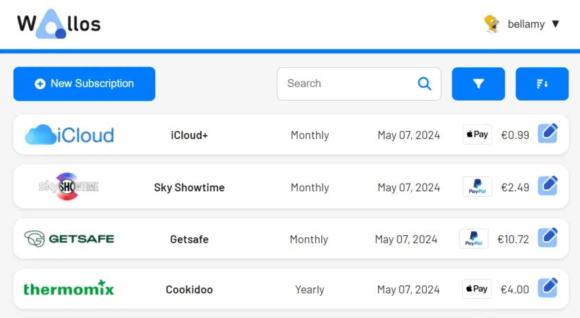

Wallos: Open-Source Personal Subscription Tracker
Self-hostable web application designed to empower you in managing your finances with ease. Wallos simplifies the process of tracking expenses and helps you gain better control over your finances.


